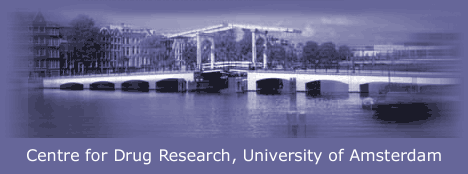

| learning |
| home page |
|  | University Corporation for Atmospheric Research Massive Weather Study Heads to Oklahoma, KS and TX Led by NCAR, one of the largest weather-related studies in U. history will track the nearly invisible swaths of moisture that fuel heavy rain across the southern Great Plains. Under the primary sponsorship from the National Science Foundation, NCAR and UOP complement and extend the universities' capabilities with collaborative research and community services and tools. .. |
| Manage Your Career Ask an Expert, Diversity Center, Insider's Guide. Directories Employer Directory, Legal Recruiters, West Legal Directory. Community Greedy Associates TM Greedy Law Students, Fashion Tips. Special Coverage War on Terrorism, Enron, Microsoft. . |